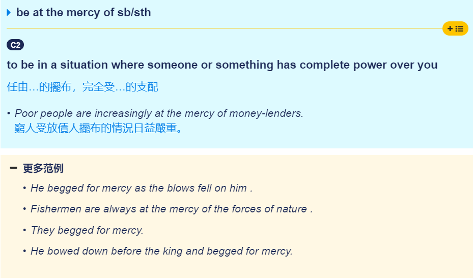

1.单词记忆
2020/1/18
capture
- 激起，激发
[1998 英一 Text1]
Few creations of big technology capture the imagination like gaint gams.
含有高技术的造物中很少有像大坝这样能够激起人类想象力的。
mercy
- 摆布
[1998 英一 Text1]
Perhaps it is humankind's long suffering at the mercy of flood and drought that makes the idea of forcing the water to do our bidding so facinating.
也许正是人类长期受到旱涝灾害的摆布才使得“让水资源为我所用”的这种想法如此吸引人。
mercy : 虽然在大部分情况下，mercy的含义为仁慈，恩惠，但是在这里我们显然不能使用这个含义，而是另外的含义受...摆布
